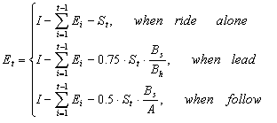
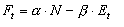

Go Lance Problem
Jeremy Dalletezze, Brandeis University
Xing Zhong, The University of Chicago
Outline
The basic goal of our model is to simulate the racing process, while downplaying the role of the end game. In our experiment, racers have the incentive to get ahead of other racers and cherish energy. They learn these incentives through adapting strategies according to a genetic algorithm. We construct positive and negative feedback mechanisms of the process as racers' "fitness" levels are positively related to their position and negatively related to energy consumed.
Model
The Road Setting
We model the topology as a flat, straight road. The road is wide enough that all racers can ride side by side if desired.
Agent Characteristics
Each racer has the same intitial level of energy, 1000. They consume energy
each round by racing at different speeds, and their remaining energy follows the energy function:

where I is initial energy level, S is speed, A is the number of racers ahead, and B is the number of racers beside or behind. In any pack of riders, the leader provides a big benefit to the other riders in the pack, and also receives a slight advantage over riding alone (this is why 0.75 appears in leaders equation and 0.5 appears in the followers equation, while 1 appears in alone equation). We scale the advantages to account for situations where we have several riders in the same position.
Racers have two speeds to select from: 1, or 2. He selects the strategy of speed ten rounds at a time. In the beginning, the speed for the first 10 rounds are randomly assigned to each racer. Then, after each 10 rounds, racers can alter their strategies. This is done in two basic ways: (1)comparing their fitness (defined below) with other "close" racers and adapting their strategy accordingly and (2) by random experimentation. (We discuss the details of this process in the Genetic Algorithm section).
For every racer, the fitness level at every round is defined as:

where N is number of racers behind and E is the remaining energy level. We assign alpha the value of 1 and beta the value of 0.5.
Genetic Algorithm
We adapt two commonly used genetic operators, mutation and crossover, to model racing behavior. As mentioned earlier, after each 10 round period, each agent looks one block ahead for other agents. If the agent finds a racer here with a higher fitness level than his own, a crossover operator is employed. Two 10-digit strategies are formed, and the racer chooses between the two based on total energy expended. For simplicity, we assumed that all racers would choose the strategy that required more energy, adding a high-speed-bias to our races. (Alternatively, we could have assumed all conservative racers or some random mix. However, this avenue is not pursued but could be in the future.)
If there are no racers (or racers with higher fitness) directly ahead of the current agent, the mutation operator is executed. This is done in the conventional way, flipping the ones and twos (sorry about the twos programmers) with some mutation probability.
This particular application of crossover and mutation creates a unique (and perhaps undesirable) relationship between the two operators. We discuss this relationship in detail in our results and limits' sections.
Results
How Mutation Affects Crossover and Learning
Due to the short sightedness of our racers, the mutation rate has a positive significant impact on the frequency of the crossover operator. With a low mutation rate, racer's strategies remain fairly constant unless they are directly behind racers with higher fitness. As the rounds progress, racers drift farther and farther away from eachother. If no one else is around, a racer has no means of evaluating her strategy.
However, when the mutation rate is high, strategies change frequently, increasing the odds of close contact with other riders. This therefore increases the chance of agents utilizing crossover to better their strategies and fitness.
In terms of a globally efficient outcome in this scenario, the mutation rate has to be just right. If it is too high, successful strategies will be constantly altered. If it is too low, interaction and learning goes to zero.
See Graphs
Mutation's Effect on Speed
Following along the same lines of reasoning as above, higher mutation leads to more random altering of strategies, i.e. speed choices. This link shows graphical evidence of this.
Mutation's Effect on Fitness
As mentioned above, mutation's interplay with crossover affects the global efficiency of our program. The "just right" mutation rate will allow riders to learn from eachother, while keeping strong strategies in tact. This ideal situation would lead to all racers having insignificantly different levels of fitness. Graphs in this link illustrate this point.
The dynamic process of racing can be found in the following movies (where racers are racing right to left):
Fitness versus Position, Low Mutation (Y axis has no meaning) , High Mutation (Y axis has no meaning)
Limits and Potentional Extensions
Modeling the agents as extremely shortsighted racers offers a daunting task for our genetic algorithm to work efficiently. A problem arises because agents can reach points where they have no one to compare fitness levels with, and thus have no ability to adapt to stronger strategies.
This downfall of our model causes us to rely heavily on the mutation rate to bring agents in close contact with each other. From the perspective of modeling reality, this may not be optimal.
Two simple, realistic rules can be added to the model to improve on the situation: (1) if a racer maintains a mean speed greater than 1.8 over a ten period round without a following pack, he will travel at a speed of 1 for the next ten rounds and (2) if a racer maintains a mean speed less than 1.2 and cannot see a rider for several miles, he will increase his speed for several of the next ten rounds. Essentially, the first rule will punish those riders who maintain high speeds far ahead of the pack. This punishment puts the racer in a position more likely to be around other riders, and thus enable him to join the learning process. Likewise, the second rule will pull the lagging riders up in the race, to learn from others, enabling them to see the gains of getting in front of racers and taking advantage of drafting.
Once we make the above changes, further tests can be explored. We briefly discuss two here: adjusting fitness parameters and introducing energy heterogeneity. By adjusting how agents value their current energy versus their position, the dynamics of the race should change. Limited logic leads us to believe that the more agents value energy, the slower the racer should be. However, experiments may reveal different results.
If we allow for energy heterogeneity, we introduce uncertainty into the model. When an agent compares her fitness level to another's, she is now faced with determining how much of the observed difference is due to previous speed strategies versus different initial energy levels. This uncertainty has a realistic flavor and may cause some interesting dynamics.
Created in July 13th, 2004